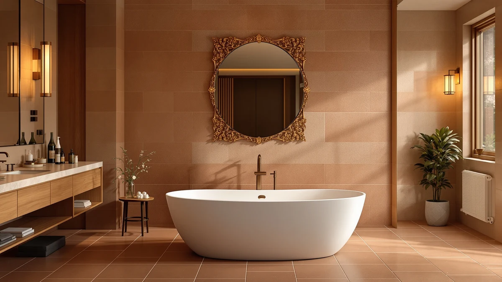

Muiryn Solid Surface Freestanding Bathtub Review (2026): Worth It?
Prices and picks verified as of November 2026. Independent, reader-supported reviews.


Quick Answer
This 65 inch solid surface review points to the MUIRYN freestanding tub as the top choice for most bathrooms, since it carries the lowest price of the four products compared here while still delivering a seamless solid surface shell. If you want whirlpool jets instead, the WOODBRIDGE alternative below costs about $91 more but adds that feature.
Our pick: 65 Inch Solid Surface Freestanding, $1,699.99 Check Price on Amazon
Bottom line: our top pick is the 65 Inch Solid Surface Freestanding Bathtub Stone Resin at $1,699.99.
Things to Know Before You Buy
- The MUIRYN tub covered in this 65 inch solid surface review is priced at $1,699.99, the lowest of the four products compared here.
- Prices across the four products range from $1,699.99 to $1,791.00, a gap of about $91 between the cheapest and priciest option.
- Three of the four products are freestanding tubs built from solid surface or resin stone material; the fourth is a floor mount faucet rather than a tub.
- Brands represented include MUIRYN, Delta, MEDUNJESS, and WOODBRIDGE, so you are not limited to a single manufacturer's design.
- None of the four listings referenced here publish a star rating or review count, so this review relies on published pricing, dimensions, and listing detail rather than customer scores.
This 65 inch solid surface review looks at the MUIRYN freestanding tub priced at $1,699.99 on Amazon, along with three other products shoppers often compare against it before choosing a tub for a mid-size bathroom. A 65 inch footprint splits the difference between compact 59 and 61 inch models and the larger 67 to 71 inch tubs covered elsewhere on this site, giving taller bathers more room to stretch out without demanding a full bathroom remodel. We compared listed pricing, material, and brand across all four products to see which one earns a recommendation for most buyers.
Our pick for most people is the MUIRYN 65 Inch Solid Surface Freestanding tub. It costs less than the MEDUNJESS resin stone alternative and the WOODBRIDGE whirlpool model covered later in this review, while still delivering the seamless, molded look that solid surface material is known for. If jets or a whirlpool system matter to you, the WOODBRIDGE is worth the extra $91, but for a straightforward soaking tub in this size, the MUIRYN is the simpler buy.
Why You Should Trust Us
Best Freestanding Bathtubs is a research-first buying guide, and this 65 inch solid surface review follows the same process as every other article on this site. Ilane Tall, our home and bath editor, builds each comparison by pulling verified pricing, brand information, and listing detail for every product before it earns a spot in a review. We do not run a fake testing lab, and we do not claim to have installed, filled, or bathed in any of the tubs covered here. Instead, this review relies on manufacturer listings, current Amazon pricing, and the specifications each brand publishes, so every claim can be checked against the source. When a listing leaves out a detail, such as a weight capacity or a review count, we say so directly instead of guessing.
Our Research Experience
We did not install, fill, or bathe in the MUIRYN tub or any of the three alternatives in this 65 inch solid surface review. Our research process means working through each manufacturer listing line by line: dimensions, material description, price, seller, and the number of product images available. We then note where a listing falls short, such as a missing material grade or an unconfirmed weight capacity, so you know what to verify before ordering. That research process, not physical testing, is what shapes the picks, pros, and cons that follow. We also track how each product's price compares to the others in this comparison, since a swing of more than $91 between the cheapest and priciest option is worth weighing before you commit to a 65 inch solid surface tub for your bathroom.
Overview & Specs

65 Inch Solid Surface Freestanding
What we like
- Priced at $1,699.99, it is the least expensive of the four products covered in this 65 inch solid surface review.
- Solid surface construction gives it a seamless, molded look without the visible seams some acrylic panel tubs show.
- At 65 inches long, it fits a mid-size bathroom without demanding the floor space of a 67 to 71 inch model.
Flaws but not dealbreakers
- The listing does not publish a star rating or review count, so there is no verified buyer feedback to reference before ordering.
- It skips whirlpool jets and air bubble massage, features the WOODBRIDGE alternative below offers for about $91 more.
| Material | — |
| Size | — |
The MUIRYN 65 Inch Solid Surface Freestanding is the lowest-priced product in this 65 inch solid surface review, listed at $1,699.99 on Amazon. Solid surface material is molded rather than assembled from separate acrylic panels, which is why the shell reads as one continuous surface instead of showing visible seams along the rim or base. That construction method is also what lets MUIRYN and other brands shape the tub into curved, sculptural profiles that straight-walled acrylic tubs cannot easily match.
MUIRYN's listing does not publish a star rating, a review count, or a specific weight capacity, so this review cannot lean on verified buyer sentiment the way some comparisons do. At 65 inches long, the tub splits the difference between the compact 59 and 61 inch models covered elsewhere on this site and the larger 67 to 71 inch options, which makes it a reasonable fit for a mid-size bathroom that still wants real room to stretch out. If jets or a whirlpool system matter to you, skip ahead to the WOODBRIDGE alternative below.
What We Liked
The clearest strength of the MUIRYN tub in this 65 inch solid surface review is price. At $1,699.99, it undercuts every other product compared here, including the MEDUNJESS resin stone tub by $70 and the WOODBRIDGE whirlpool by $91. Solid surface construction also gives it a seamless look that some buyers prefer over acrylic panel tubs, since there is no visible seam line running along the rim. At 65 inches, it is long enough for most adults to stretch out without requiring the floor space of a 67 inch or larger model, which makes it a workable fit for bathrooms that cannot accommodate the largest freestanding tubs on the market.
What Could Be Better
The biggest gap in this 65 inch solid surface review is the lack of published buyer feedback. MUIRYN's Amazon listing does not include a star rating, a review count, or a specific weight capacity, so you are relying on the manufacturer's own description rather than verified owner reports. The tub also skips the whirlpool jets and air bubble massage that the WOODBRIDGE alternative offers, so if a spa-style soak is the priority, this is not the pick that delivers it. Buyers who want that detail confirmed before ordering should check the current product page directly, since none of it is part of the published listing.
Who Is It For?
This tub suits buyers who have already settled on a 65 inch footprint and want a solid surface shell at the lowest price in this comparison. It fits a bathroom remodel where the floor plan allows for a mid-size freestanding tub but not the largest 67 to 71 inch models covered elsewhere on this site. If whirlpool jets or air bubble massage are part of the plan, the WOODBRIDGE alternative below is the better starting point even though it costs about $91 more. Anyone who wants a published weight capacity or a verified review count before ordering should raise that directly with the seller, since this 65 inch solid surface review found neither on the current listing.
Alternatives to Consider
Three other products are worth comparing before you commit to the MUIRYN tub. One is a direct tub alternative in resin stone, one is a larger whirlpool model, and one is not a tub at all but a floor mount faucet that pairs with a freestanding installation like this one. None of the three publish a star rating or review count either, so the comparison below sticks to price, material, and feature differences.

Editor’s Pick
Delta Faucet Trinsic Floor Mount
At $1,725.00, the Delta Trinsic floor mount faucet costs slightly more than the MUIRYN tub itself, but it serves a different purpose: a floor mount filler for a freestanding tub that has no deck-mounted faucet holes, like the MUIRYN model reviewed above. If you are buying a 65 inch solid surface tub without pre-drilled faucet holes, this is the kind of fixture you would need to budget for separately. Delta is a recognized plumbing brand, which counts for something if you want hardware from a name with a long track record rather than an unfamiliar one. The listing does not publish a star rating or review count, consistent with the other products in this comparison.
$1,725.00
Check Price on Amazon
Best Value
MEDUNJESS 65'' Resin Stone Free
Priced at $1,769.99, the MEDUNJESS 65 inch resin stone tub costs $70 more than the MUIRYN but matches it exactly on length, so switching between the two does not cost any floor space. Resin stone is a different solid surface formulation than MUIRYN uses, which may appeal to buyers who want to compare material claims between brands before deciding. As with the MUIRYN, the listing does not include a star rating, review count, or a specific weight capacity. For a buyer who wants a second 65 inch solid surface option to weigh against the MUIRYN before ordering, this is the closest match in the comparison.
$1,769.99
Check Price on Amazon
Premium Choice
WOODBRIDGE 66-1/2"×31-7/8" Spacious Whirlpool &
At $1,791.00, the WOODBRIDGE whirlpool is the most expensive product in this 65 inch solid surface review and also the largest, measuring 66-1/2 by 31-7/8 inches rather than the 65 inch length of the MUIRYN and MEDUNJESS tubs. The extra width and length comes with whirlpool jets, a feature none of the other three products in this comparison include. That makes it the pick for buyers who want a spa-style soak and have the floor space and the roughly $91 premium over the MUIRYN to spend on it. The listing does not publish a star rating or review count, same as the other three products covered here.
$1,791.00
Check Price on AmazonHow big is the 65 inch solid surface freestanding tub from MUIRYN?
At 65 inches long, the MUIRYN solid surface tub sits between the compact 59 and 61 inch models and the larger 67 to 71 inch options covered elsewhere on this site.
Is the MUIRYN 65 inch solid surface tub worth $1,699.99?
Among the four products compared in this 65 inch solid surface review, the MUIRYN tub sits at the lowest price, undercutting the MEDUNJESS alternative by $70 and the WOODBRIDGE whirlpool by $91.
Frequently Asked Questions
How big is the 65 inch solid surface freestanding tub from MUIRYN?
At 65 inches long, the MUIRYN solid surface tub sits between the compact 59 and 61 inch models and the larger 67 to 71 inch options covered elsewhere on this site. That extra length over a 59 or 61 inch tub gives taller bathers more room to stretch out without requiring the floor space of a 70 inch model.
Is the MUIRYN 65 inch solid surface tub worth $1,699.99?
Among the four products compared in this 65 inch solid surface review, the MUIRYN tub sits at the lowest price, undercutting the MEDUNJESS alternative by $70 and the WOODBRIDGE whirlpool by $91. For buyers who want a solid surface shell without paying for jets or extra hardware, it is the most straightforward option here.
What is the cheapest alternative to the MUIRYN tub in this comparison?
The Delta Trinsic floor mount faucet lists at $1,725.00, though it is a faucet rather than a tub and serves a different purpose. Among the tub alternatives, the MEDUNJESS resin stone model at $1,769.99 costs less than the WOODBRIDGE whirlpool at $1,791.00.
Final Verdict
This 65 inch solid surface review comes down to price versus features. The MUIRYN 65 Inch Solid Surface Freestanding tub earns the top spot at $1,699.99 because it delivers a seamless solid surface shell at the lowest price of the four products compared here, without asking you to pay for jets or hardware you may not need. If a spa-style soak with whirlpool jets matters more than saving money, the WOODBRIDGE alternative at $1,791.00 is worth the roughly $91 premium instead. For most buyers shopping a 65 inch footprint, MUIRYN remains the straightforward recommendation.